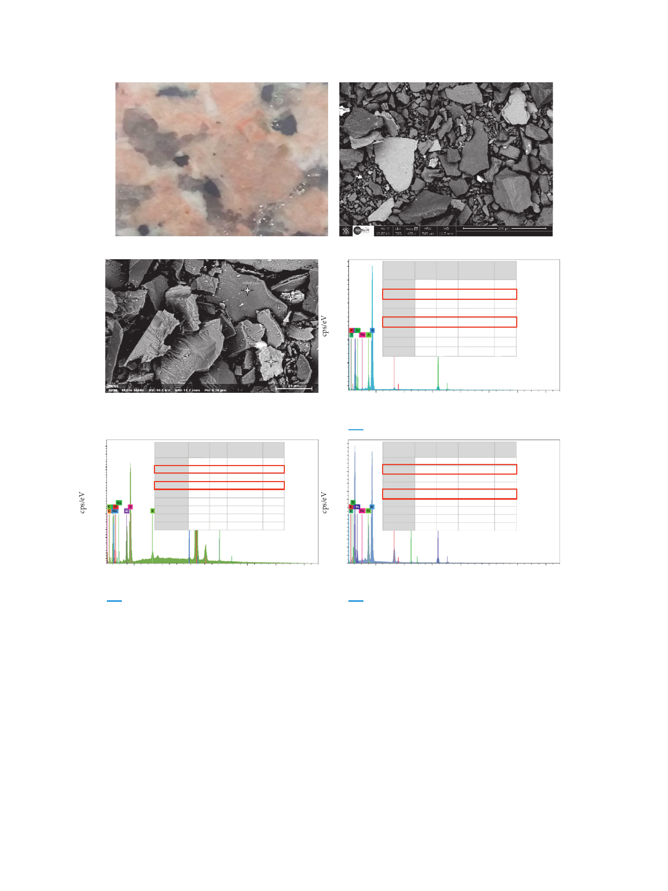

International Journal of Microbiology
7
(a)
140
S1
120
S2
100
80
60
14
S3
40
20
0
2220 Element Line s. M(%as)s Mas(s%n)orm. A(t%om) 140
Carbon K-Serie 2.54 2.87
7.48
18
Oxygen K-Serie 9.01 10.16 19.89
120
16
Aluminium K-Serie 9.49 10.70 12.43
14
Silicon K-Serie 27.48 31.00 34.57
100
Potassium K-Serie 1.07 1.21
0.97
12
Manganese K-Serie 0.59 0.66
0.38 (S2)
80
10
Iron
K-Serie 37.78 42.61 23.90
8
Copper K-Serie 0.70 0.80
0.39
60
88.65 100.00 100.00
6
40
4 20
2
0
0
2
4
6
8
10
12
14
Energy (keV)
ROSE 4318
(c)
(b)
Element
Line s. Mass
(%)
Carbon K-Serie 5.82
Oxygen K-Serie 49.48
Sodium K-Serie 0.91
Aluminium K-Serie 5.63
Silicon K-Serie 53.55
Potassium K-Serie 0.88
Iron
K-Serie 6.54
122.82
Mass norm.
(%)
4.74
40.29
0.74
4.59
43.61
0.72
5.33
100.00
Atom
(%)
8.25
52.67
0.67
3.55
32.47
0.38
1.99
100.00
(S1)
2
4
6
8
10
12
Energy (keV)
ROSE 4317
Element Line s.
Carbon K-Serie
Oxygen K-Serie
Sodium K-Serie
AluminiumK-Serie
Silicon K-Serie
Potassium K-Serie
Titanium K-Serie
Iron
K-Serie
Mass
(%)
4.79
60.10
0.88
7.88
23.64
6.47
1.08
11.09
115.93
Mass norm.
(%)
4.13
51.84
0.76
6.80
20.39
5.58
0.93
9.57
100.00
Atom
(%)
6.97
65.74
0.67
5.11
14.73
2.90
0.39
3.48
100.00
14
(S3)
2
4
ROSE 4319
6
8
10
12
14
Energy (keV)
Figure 4: Optical image (a), SEM images (b) and (c), and corresponding local EDS analysis in different sides (S1, S2, and S3) of Rosa Porrino
sample.
presented in Figures 7 and 8. In general, the number of
biofilm cells reduced was increased after sodium hypo-
chlorite treatment for both granites at different contact times
(5, 10, 15, and 30 min) and concentrations (0.5, 1, 1.5, and
2%). For granite Rosa Porrino (Figure 7), there is a signifi-
cant difference (P > 0.05) in the number of biofilm cells
reduced at the concentration of 0.5 % after 5, 10, 15, and
30 min of treatment, reaching 3.86, 3.82, 5.23, and 5.08 of
log10 reduction, respectively, while when increasing the
concentrations of sodium hypochlorite to 1 %, the signifi-
cance was noted only after 5 min of treatment, but when
increasing it to 1.5 %, the significance was observed after
30 min. By contrast, no significance was pronounced when
increasing the concentration to 2 % after 5, 10, 15, and
30 min of NaCLO treatment. For Gris Pinhel (Figure 8),
there is a significant difference in the number of biofilm cells
reduced at 0.5 % of NaCLO after all contact times, repre-
senting 3.55 (5 min), 3.34 (10 min), 3.64 (15 min), and 3.03
(30 min) of log10 reduction. Except for 15 min of contact
time, no significance was pronounced when increasing the
concentration to 1 %. However, the increase of NaCLO
concentration to 1.5 % shows a significant difference after all
contact times are tested, where the reduction has reached an
important level (no colonies were observed following plate